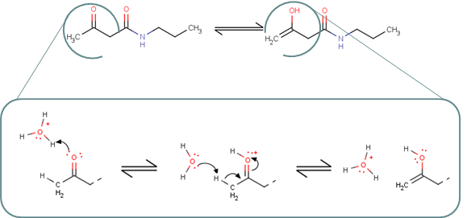
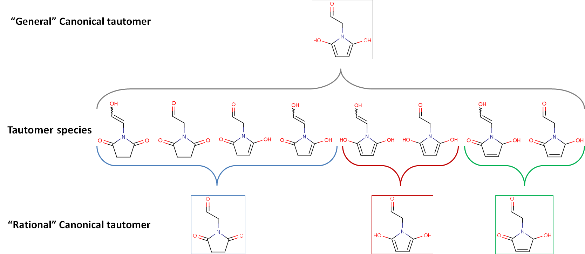

Tautomers are structural isomers of organic compounds that are in dynamic equilibrium due to the migration of a proton. The isomerization reaction by which tautomers are interconverted is called: tautomerization.

The X, Y, Z atoms are generally any of C, H, O, or S, and H becomes an electrophile during isomerization. When the electrophile is H+, isomerization is also known as "prototropy".
In solutions, in which tautomerization is possible, a chemical equilibrium of the isomers will be reached while the reaction results in the formal migration of a hydrogen atom or proton accompanied by a switch of a single bond and adjacent double bond. Commonly, the catalysts of these reactions are acids or bases.
Different tautomers of a compound can be generated with the help of the Tautomer Generator Plugin. Tautomer Generator Plugin first identifies possible proton donors and acceptors in a molecule and finds tautomerization paths between them. Depending on the desired operation,
The example below illustrates that "general" and "rational" canonical tautomers can differ in number.
Rational canonical tautomer generation classifies isomers according to structural similarities: isomers in a group can convert into each other by simple low energy transformations, while transformation between the isomers of two different groups requires higher energy steps (e.g., breaking/forming aromatic system).
The following image shows the previous example from a different angle.
In line with the definition of tautomerization, all isomers of a compound are in equilibrium, e.g., isomer B - outlined in red - is in equilibrium with its seven tautomers via multiple steps. Note that isomer G or H can transform into isomer E or F only in multiple steps through isomer D.